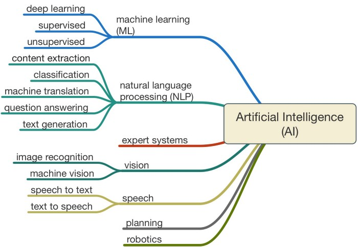

It depends who you ask. Back in the 1950s, the fathers of the field, Minsky and McCarthy, described artificial intelligence as any task performed by a machine that would have previously been considered to require human intelligence. That's obviously a fairly broad definition, which is why you will sometimes see arguments over whether something is truly AI or not. Modern definitions of what it means to create intelligence are more specific. Francois Chollet, AI researcher at Google and creator of the machine-learning software library Keras, has said intelligence is tied to a system's ability to adapt and improvise in a new environment, to generalise its knowledge and apply it to unfamiliar scenarios.

From the broad definition of A.I., it is expected that it has alot of subfields. The most popular fields are shown in the following fig. And we would talk a little bit about some of these subfields in the following sections.
